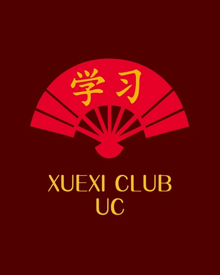
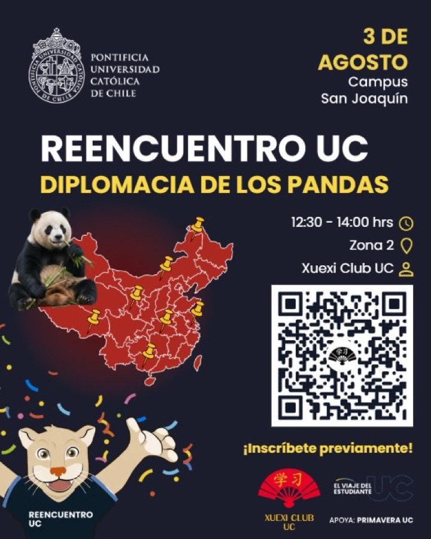
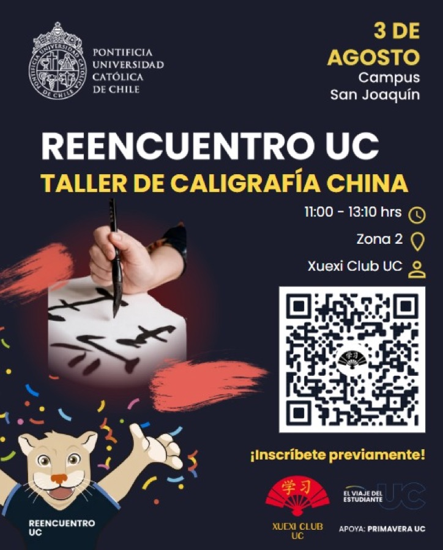
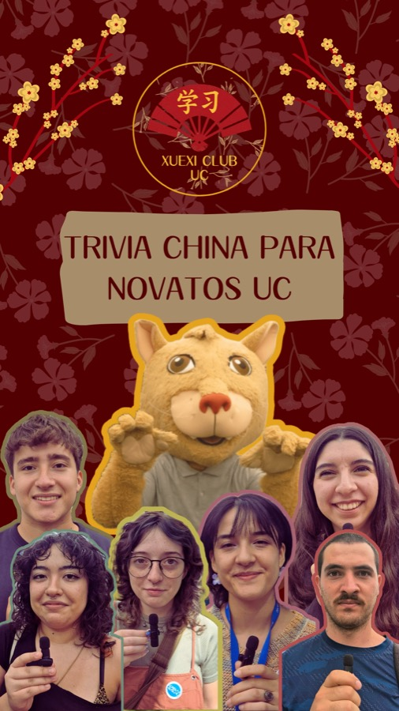
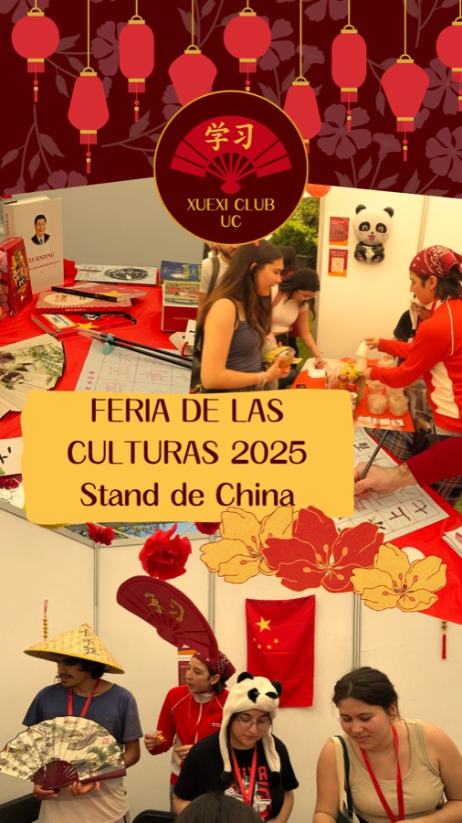
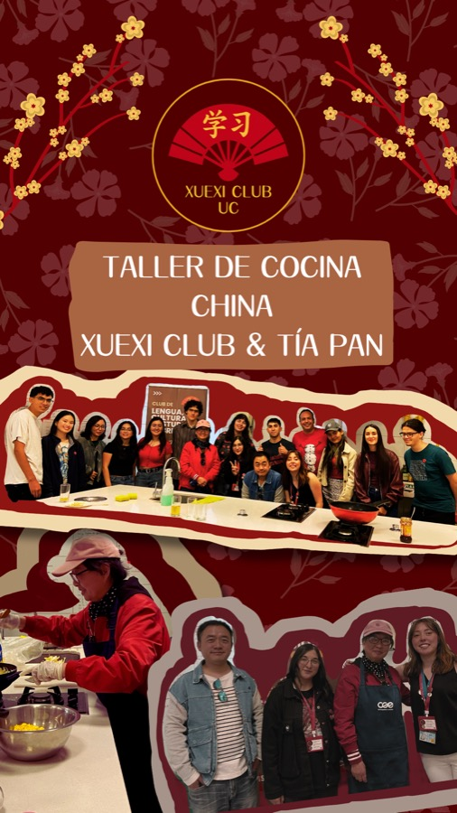
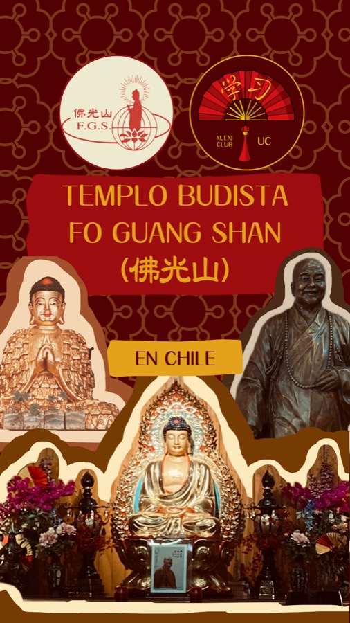

麦
Inscripción cerrada
11:00 – 13:00 hrs
Karaoke chino 开麦吧!
Zona 2 · Campus San Joaquín
Inscripción cerrada — cupos completos
Tu puerta de entrada a los estudios sobre China
学 estudiar · 习 practicar
Tu puerta de entrada a los estudios sobre China
Talleres, tandems, té y trivia — un club abierto a toda la UC. No necesitas saber chino: llega con curiosidad, el resto lo ponemos entre todos.

3 de agosto · Zona 2, Campus San Joaquín · organiza Xuexi Club UC, con El Viaje del Estudiante UC · apoya Primavera UC
11:00 – 13:00 hrs
Zona 2 · Campus San Joaquín
Inscripción cerrada — cupos completos

熊12:30 – 14:00 hrs
Zona 2 · Campus San Joaquín
Inscripción previa por QR en el afiche del club

笔 Inscripción cerrada11:00 – 13:10 hrs
Zona 2 · Campus San Joaquín
Inscripción cerrada — cupos completos
学习 xuéxí · estudio
Comisión de Conocimiento AcadémicoLevanta conocimiento e investigación sobre China, su diáspora en Chile y la interconexión entre ambos países. Publica columnas de opinión y organiza congresos y jornadas de investigación.
外联 wàilián · relación
Comisión de Idioma, Comunidad y NetworkingFomenta el aprendizaje del mandarín, forma alianzas con profesionales y centros afines, y gestiona las actividades del club: talleres, charlas, almuerzos, festivales y stands.
信息 xìnxī · información
Comisión de Difusión, Diseño e InformaciónConvierte el trabajo de las otras comisiones en material publicable: entrevistas, reels y piezas gráficas. Administra las redes del club y cuida que cada publicación lleve los créditos de quienes participaron.
协调 coordinación general
Entre 6 y 8 personasPresidencia, vicepresidencia, secretaría, tesorería y los coordinadores de cada comisión. Acepta propuestas y proyectos, actúa como comité de ética y representa al club ante la universidad y organizaciones externas.

Te recibe la mascotaEl panda rojo del club acompaña ferias, trivias y entrevistas en el campus.
Actividades abiertas a la comunidad UC y a externos



Súmate a la comunidad, propón un artículo o acércate a un taller. No necesitas saber chino — solo curiosidad.
我们一起学习，外联和信息